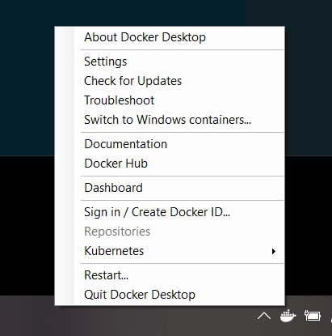
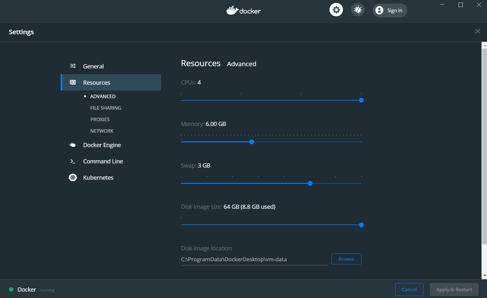
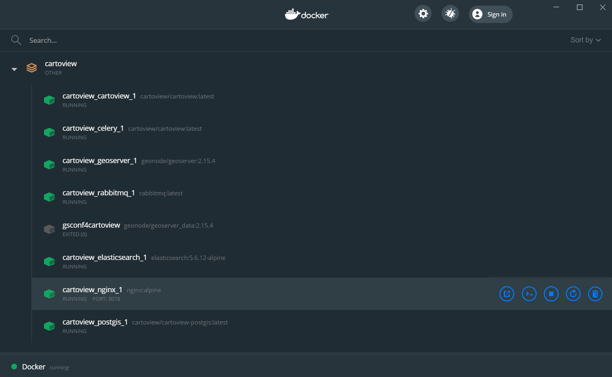
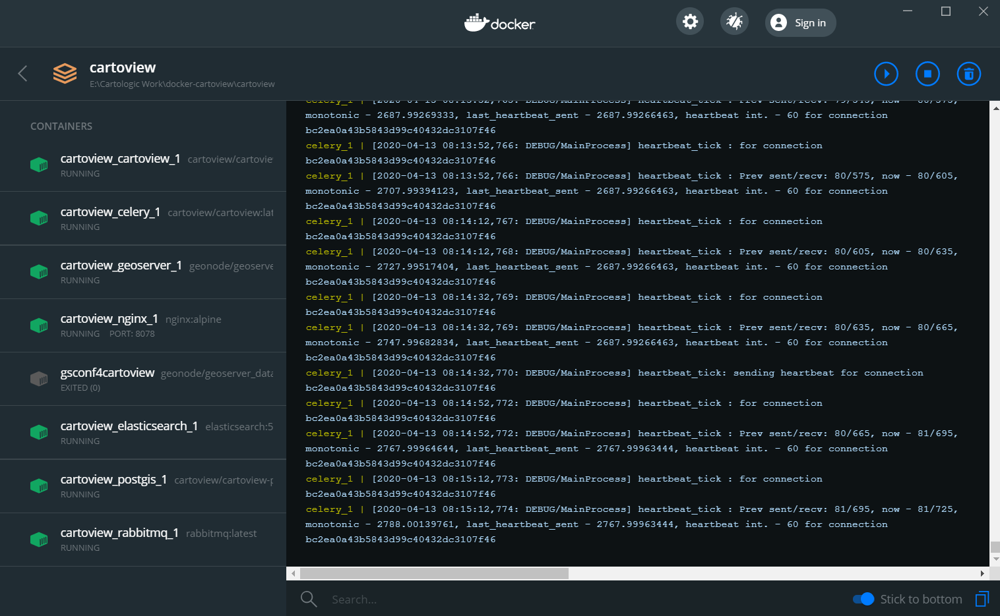
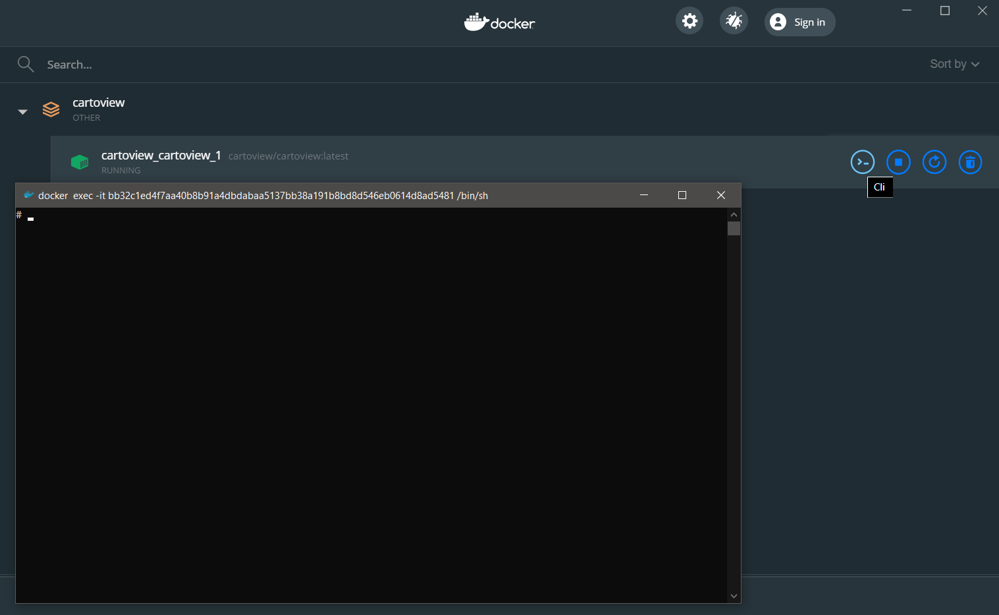
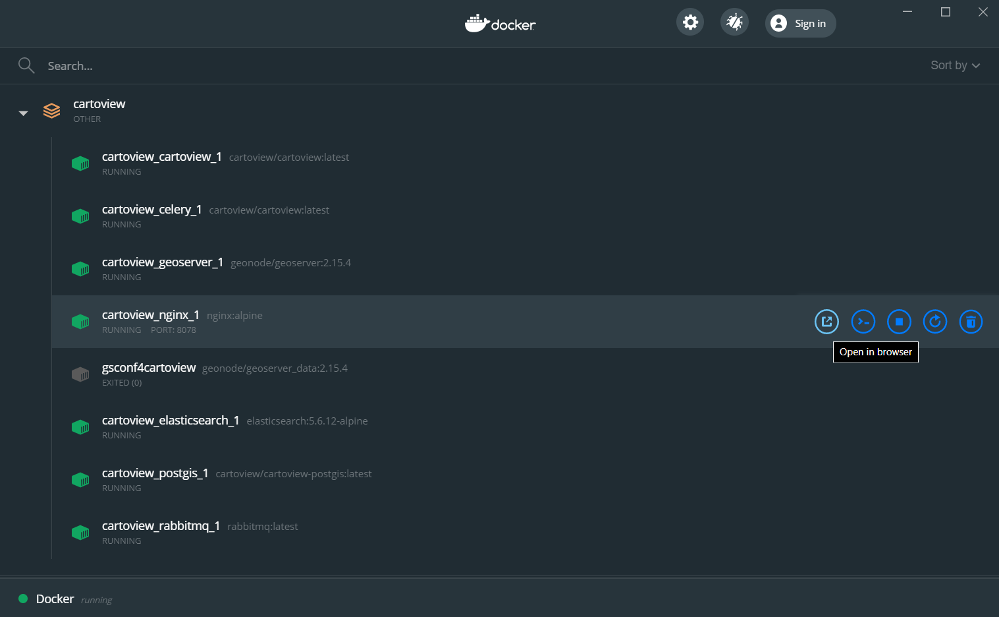

Cartoview¶
Introduction ¶
This document describes the installation of Cartoview using Docker on either Ubuntu 18.04 or Windows 10.
Installation Requirements¶
-
For Ubuntu 18.04:
-
Install Docker
In order to be able to run Cartoview with docker engine, Docker Compose should be installed, but because it relies on Docker Engine, we will install
dockerfirst from Docker official website.1. Install Docker Engine, navigate to this guide. We recommend to install it using docker repository.
2. Install Docker Compose, navigate to this guide.
Note
Run Docker commands without
sudoThe Docker daemon needs to use
rootprivileges, so we always prefix each docker command withsudo, but if you want to run them withoutsudo, check How to manage Docker as a non-root user.Validate Docker Installation
To make sure Docker is installed successfully, run the following command.
1
docker --version
It should print something like,
Docker version 19.03.8, build afacb8b. -
Install Python2.7 and Django
In order to run Cartoview Project Template, we need to install python and django.
1 2
sudo apt-get update sudo apt-get install python-pip python-django
-
-
For Windows 10:
Docker has two applications:
1. Docker Desktop but it has specific system requirements that must be met.
2. Docker Toolbox which is used for systems that do not meet the requirements of Docker Desktop.
For Windows Docker Desktop:
-
Download and Install Docker
Walk through this guide to download and install Docker Desktop.
Important
Before installing Docker Desktop, please read carefully the What to know before you install section.
Note
While installing, make sure you leave everything as default.
After installing docker desktop, we need to start it. In the search-bar, search for Docker, and select Docker Desktop in the search results.
When the whale icon in the taskbar stays steady, Docker Desktop is up-and-running, and is accessible from any terminal window.
Note
If you right-click on the whale icon, you can check multiple features like docker version, docker hub, dashboard, etc.

Docker Dashboard provides a useful interface to handle and control all the available containers easily. Please visit Docker Desktop Dashboard for more details.
Now, if we need to execute any incoming commands, we can execute them in the
Command PromptorWindows PowerShell. -
Optional | Configure Docker Resources
You may want to change the default resources given to Docker to speed up operations that will be done on the containers.
Right-click on the whale icon, select Settings, navigate to Resources tab.

For Docker Toolbox:
-
Download and Install Docker
Walk through this guide to download and install Docker Toolbox untill you got the terminal in which we will execute the following commands.
Note
Docker Toolbox by default, is configured to use IP address
192.168.99.100so instead of usinglocalhostwe will use this IP address.
Validate Docker Installation
To make sure Docker is installed successfully, run the following command.
1
docker --version
It should print something like,
Docker version 19.03.8, build afacb8b. -
-
Install Python2.7 and Django
As explained in Cartoview Installation | Windows section, download and install Python2.7.
Open
Windows PowerShelland install django.1
pip install django==1.11.11
Cartoview Libraries Installation ¶
-
Download and Install Cartoview Project Template
In order to setup the project template, we need to make a django project based on Cartoview.
We will call it
cartoview_projectbut you can name it whatever you want.Warning
Before executing the command below, make sure that port 80 is not used by any process as Cartoview project will be running on it.
1
django-admin.py startproject --template=https://github.com/cartologic/Cartoview-project-template/archive/master.zip --name django.env,uwsgi.ini,.bowerrc,server.py cartoview_project
Notes
For the above command, if you want to change the name of the project any name other than
cartoview_project, you can just substitutecartoview_projectwith the name you have chosen.If
django-admin.pyis not working, trydjango-admin.This will generate a folder called
cartoview_project(or the name you have specified).Cartoview project template will take care of the initial setup of your project. It will generate all the code that is needed to establish a Django project that is based on Cartoview and GeoNode frameworks.
Navigate inside
cartoview_project1 2
cd cartoview_project docker-compose up -d
For UBUNTU
If you didn't configure docker to run without
sudo, make sure to prefix each docker command with it.Get a cup of coffee and wait untill all the images are downloaded and installed successfully.
For DOCKER DESKTOP
While installation, you may be prompted to accept whether to give permission for Docker to mount its containers on one of your hard-drives or to not. Accept this so that the containers may run probably.
If you didn't accept, you will get errors. Execute
docker-compose up -dagain and accept.After all images are downloaded, you can monitor the logs of initiating
Cartoview Project Templatewith this command.1
docker-compose logs -f --tail=100
For Windows DOCKER DESKTOP
If you open Docker Dashboard, you should find the installed containers up and running.

Also, you can see the logs by just double-click on
cartoview.
-
Migrate & Load default data
We need to execute some commands to the service after it's up and running. So we will open the terminal inside
Cartoview Project Templatecontainer.1
docker exec -it cartoview_container /bin/bash
This will open a shell in which we will execute the below commands.
For Windows DOCKER DESKTOP
Open Docker Dashboard and for
cartoview_cartoview_1container, click on theClibutton to open the terminal in which we will execute the below commands.
Detect changes in the
app_manager1
python manage.py makemigrations app_manager
Create account Table:
1
python manage.py migrate account
Create the rest of the tables:
1
python manage.py migrate
Load default User:
1
python manage.py loaddata sample_admin.json
Load default oauth apps so that you will be able to authenticate with defined external server:
1
python manage.py loaddata default_oauth_apps.json
Load default Initial Data for Cartoivew:
1
python manage.py loaddata initial_data.json
Note
After executing the above commands, you can exit the container terminal by just typing
exitthen hit theEnterbutton. -
Test the development server
To see the effect of changes, all we have to do is just restarting the service.
1
docker-compose restart
For Windows DOCKER DESKTOP
Open Docker Dashboard and for
cartoview_nginx_1container, click onOpen in browserbutton to open Cartoview project instance in the browser.
In the browser navigate to
localhost:80. You should get:
Sign-in with:
1 2
user: admin password: admin
For GeoServer:
localhost:80/geoserver
To sign-in, make sure you're signed in Cartoview and click on GeoNode icon beside the
Loginbutton.
-
Any file with
.envEXTENSION is a file that contains Environment Variables passed to specific container for exampledjango.envfile contains Environment Variables passed to Cartoview container so Django can read these variables and use them -
If you want to run this project with a domain :
- From
django.env(this is a file that contain common django setting variables) file in your Project Folder:1 2 3 4 5
DATABASE_URL=postgres://<database_user_name>:<database_password>@postgis:5432/Cartoview GEOSERVER_PUBLIC_LOCATION=http://<your_domain_or_ip>/geoserver/ GEOSERVER_LOCATION=http://geoserver:8080/geoserver/ SITEURL=http://<your_domain_or_ip> ALLOWED_HOSTS=['*']
- From
-
For windows Toolbox, the default IP aasigned to Docker is :
192.168.99.100so the default django.env file must be something like this:1 2 3 4 5
DATABASE_URL=postgres://<database_user_name>:<database_password>@postgis:5432/Cartoview GEOSERVER_PUBLIC_LOCATION=http://192.168.99.100/geoserver/ GEOSERVER_LOCATION=http://geoserver:8080/geoserver/ SITEURL=http://192.168.99.100 ALLOWED_HOSTS=['*']
Tips
Deployment notes¶
-
Important
Once Cartoview is installed it is expected to install all the Apps from the app store automatically Cartoview will not be able to restart Docker when new apps install. After you install any new app or any app update you will need to restart docker manually until this issue is addressed in the future- Follow these steps to get Apps working on nginx
- Collect static files using this commands in your project folder
1
make collect_static
- Restart server now with the following command you should restart server after installing any App
1
docker-compose restart Cartoview
- Collect static files using this commands in your project folder
- Follow these steps to get Apps working on nginx